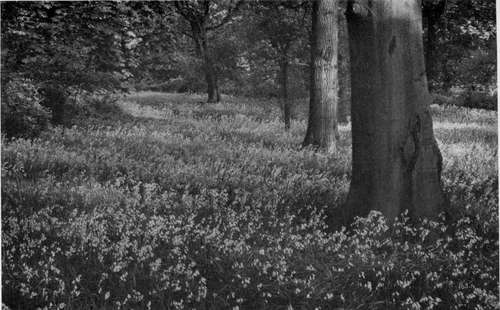

Chapter VI. Wild Gardening
Description
This section is from the book "What England Can Teach Us About Gardening", by Wilhelm Miller. Also available from Amazon: What England Can Teach Us About Gardening.
Chapter VI. Wild Gardening
How we can obtain most of the charm of an English park in four years, while the doomed chestnut trees may pay the bills.
THE first day I was in England I stepped into the grounds of an archery club at Plymouth, and saw millions of bluebells carpeting the ground by the acre. They grew so thickly that it was impossible to avoid stepping on them, as the reader may see for himself, by plate 24, facing page 57. The effect was enchanting. One seemed to be walking in the forest of Arden. It made one think of Robin Hood, of Puck, of Arthur and his knights.
"Oh, yes; but it takes a thousand years to produce such effects," you will say.
On the contrary, I am positive that any American who owns a great estate can get most of this charm in four years, and practically all of it in one lifetime. These bluebells, for instance, cost only ten dollars a thousand, or one cent a bulb. They need no care after planting. You can order them now, plant them next fall, and they will bloom next spring. In rich woods they will increase so fast that you could duplicate the identical effect here pictured in four years at a cost of one hundred dollars.
Even the trees in your overcrowded, uninteresting woodlands will respond wonderfully in four years, if you will let a landscape forester mark (at a cost of eight dollars an acre) the trees which should come out this year, and the three succeeding years.
Then your "telegraph poles" will begin to branch out from below and make dignified and interesting trees. You can get a great deal of the atmosphere of English pleasure woods in four years simply by thinning the trees. And meanwhile you can be planting bluebells and other bulbs, for they will not be harmed by the falling of trees. (See plates 5 and 24.)
You gentlemen of Long Island, who own hundreds of acres of woods, do you know why you enter them about once a year? It is because you cannot stroll in woods that are full of mosquitoes, briers, and burrs. And, beside, there is nothing to see, because you never use the axe or plant anything. Yet you could quadruple the value of your wooded land as residential property in four years by wild gardening. Last winter, near Westbury, I saw two estates on which twenty thousand dead chestnut trees had been cut out. If the owners had sold the live trees for poles four years ago, when they were warned about this incurable disease, they would have received enough to pay all the expense of transforming those woods into a charming English park. Last spring, for instance, they might have had a million blue-bells in those woods, the mosquitoes under control, everything that would tear flesh or clothing removed, and the trees all growing large and shapely.
It is only thirty years ago that the phrase "wild gardening" was invented by Mr. William Robinson, who wrote a book on the subject that is a joy. In the spring of 1909 I went to see his estate, where the idea of wild gardening is carried out on a glorious scale. I was too late to see the daffodils, which he used to plant by the ton and even by the car load, but the pictures on plates 20, 23, 26 and 88, give some idea of what the place is like. Mr. Robinson gave me these four photographs by Mr. Champion, with the remark that he had been waiting thirty years for an artist who could do the sort of thing pictured on plate 88.
BLUEBELLS OR WOOD HYACINTHS IN THE QUEEN'S COTTAGE GROUNDS AT KEW. THEY GROW BY THE MILLION OR BY THE ACRE IN ENGLAND. WE CAN HAVE BIG SHEETS OF THEM, TOO, THE BULBS COST ONLY $lO A THOUSAND, AND THERE ARE BLUE, PINK, AND WHITE VARIETIES (Scilla nutans.) See page 55.
These two effects — daffodils and bluebells — we can reproduce literally. There is no question about their hardiness or about their looking like wild flowers, provided they are not set out in lines or patterns. The third great flower show in the English woods, before the trees leaf out, is made by primroses, but we cannot have primroses bythe million. However, we have an equally lovely yellow flower in the fawn lily or dog's tooth violet (Erythronium Americanum), which carpets our own woods in April. If you will keep cows and sheep out of your wood lot and spend twenty dollars for one thousand bulbs of this yellow adder's tongue, you will eventually carpet the forest floor with flowers and produce a distinctly American effect of which you may be justly proud. These bulbs ought to be collected in August.
American woods ought to be even more beautiful than the English in spring, for we have trilliums, bloodroot, and hepaticas. (The hepatica is also native to Europe, but not as plentiful as here.) The trillium is by far the largest white flower that will grow in the woods and that blooms in the spring, and you can get one thousand second-sized bulbs at two cents each. The hepatica is the earliest flower we can have, and you can buy the pink, blue, or white, single or double, from the regular nurserymen, or get the mixed sorts collected from the wild for twenty-five dollars a thousand. Blood-root can be collected for eighteen dollars a thousand, or nursery-grown plants will cost about sixty dollars. It is a mistake to dig these three kinds of flowers in the spring. The best plan is to order them in summer for early autumn delivery.
After the trees leaf out the shade is too dense for continuous sheets of bloom either in England or America, but it is entirely practical to have strong masses here and there, if we will only thin out the woods enough to encourage flowers, but not enough to let the grass crowd out all floral beauty. We generally swing from one extreme to the other. We begin by allowing no one to use the axe. Then we get the notion that an English deer park is the ideal thing, so we cut out too much and let in the cattle, whereupon the wild flowers vanish and the trees are left with ugly stag-horn tops.
The largest flower show in English woods after the leaves come out is made by the Pontic rhododendron, but this has a coarse, unpleasant colour. Our own Catawbiense, which blooms in June, is no worse in colour, and decidedly hardier, while our maximum is altogether lovely in July. Then, too, there is no evergreen native to Europe which is half so beautiful as our mountain laurel. I am happy to say that we really are beginning to appreciate these three evergreens. It is now quite the fashion to plant them by the car load. England cannot grow Rhododendron maximum at all.
Continue to:
Tags
garden, flowers, plants, England, effects, foliage, gardening